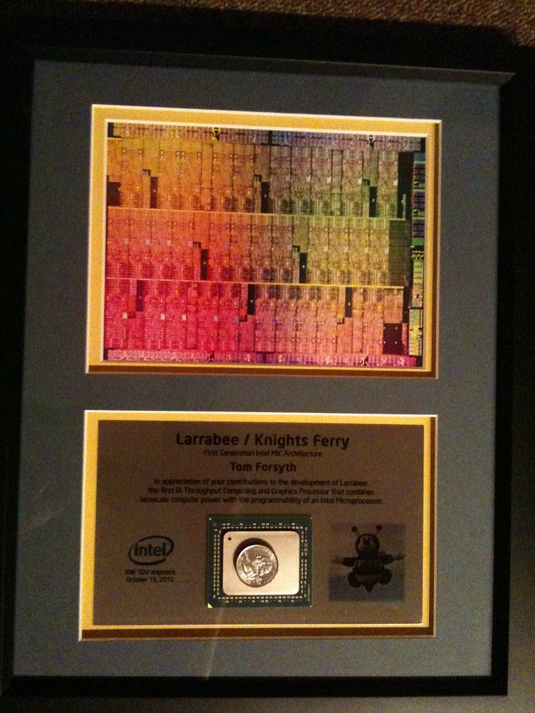

Email address is: tom dot forsyth at eelpi dot gotdns dot org
Twitter: @tom_forsyth
Although I do have Facebook and LinkedIn accounts, I very rarely log in or check messages.
This web page might reside on various servers, please use the link http://eelpi.gotdns.org/. So if it does move, you'll still get to the right one. Thanks.
I work at Oculus VR helping make the Rift the finest VR HMD in the world.
I worked at Valve Software doing Virtual Reality R&D. I wrote big chunks of the Team Fortress 2 VR support for the Oculus Rift.
I worked at Intel as a software and hardware architect on the Larrabee project, which has now become Knights Ferry/Corner/Landing, and is sold as the Xeon Phi.
I worked at the fabulous RAD Game Tools in Seattle, where I worked on Granny3D, which is a runtime animation package and mesh export pipeline. If you're a games company, you'd be crazy not to at least get an evaluation.
I worked at wonderful wonderful Muckyfoot Productions in Guildford until its demise where I worked on Urban Chaos, StarTopia and Blade II.
In the past I have also worked at 3Dlabs, Sega, and Microprose, as well as run my own tiny games company you've never heard of.
The Papers Wot I Wrote - all my published work and lectures.
My blog mainly about rendering. RSS feed available.
A collection of public info about Larrabee/Knights/XeonPhi.
I have a now rather obsolete FAQ about DirectX - especially useful if you need to cope with really old graphics cards.
I did a new patch for StarTopia! which incorporates some of my shadowing ideas.
I usually hang out on the GDAlgorithms and DirectXDev mailing lists, and the GameDev.net forums, although Twitter has replaced most of these now.
I have lots of hobbies, but this is my most expensive and visible one.
Caterham Seven SV. Stupid fast in a straight line, corners better than anything, and with zero driver aids it's an incredibly visceral driving experience. 27mpg - eccentric British motoring madness!
Nissan GT-R. Fast in an entirely different way to the Seven - it's refined and eminently capable - barely breaks a sweat until you're north of 100. Absolutely retains the feel of the old Skyline - Nissan have yet again made an awesome beast of a car.
BREAKING NEWS! The black Nissan GT-R has now been replaced by... a brand new black Nissan GT-R. It looks identical.
Subaru Impreza WRX (the 2002 model with the bug-eye headlights). This is my "sensible" family sedan/saloon. Four doors, trunk/boot, 4 wheel drive, economical, reliable, and completely unstoppable by rain or snow. And still easily fast enough to have silly fun in.
Skyline R33 GTS - sadly, I had to sell this awesome car when I moved to Seattle.
I helped mod a Wiki server to be more C++ friendly. It's over here.
The GamePark32 - possibly the best handheld gaming platform in the world - ever.
My wife's photoblog - mainly hiking and birds, but also pictures of cars, holidays, etc.
I like XCom. And who doesn't? I used to have some very hacky tips on running XCom Apocalypse under XP which didn't really work very well and the sound was a bit funny, but the other day I just went and bought it off Steam for $5, and the chaps at Valve have made it Just Work with no screwing around.
If you haven't met me recently, I changed my hair just a tad. Here's a before and after:


And on a happier note, I got a plaque for Larrabee / Knights Ferry. Which is cool.
I put the US$ quarter there for scale. I suspect there's no actual chunk of silicon inside this particular package, but still - that's a big mother hubbard of a chip. I've shipped games before, and that's pretty damn cool to see the box sitting on the shelf in the shop, but in the end it's "just" a DVD. This - this is a chunk of sand and metal processed with the finest technology in the world, and the original design and principles - I thought of that. That's pretty cool.
